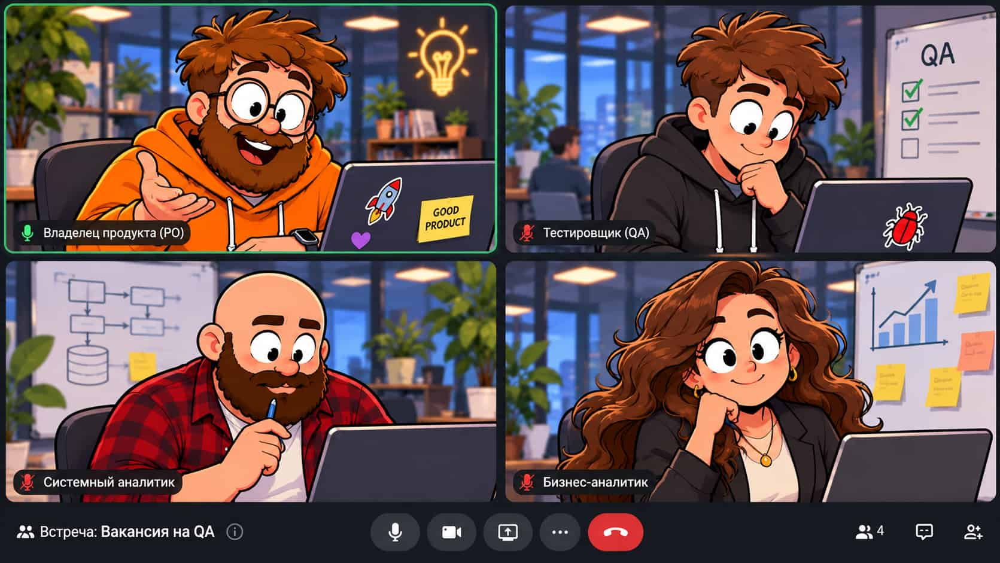

Голосом — демо. Ответ записывается в браузере и распознаётся на сервере после завершения.
Выберите хотя бы одну категорию
Ручные и голосовые раунды: видно, какие вопросы засчитаны, а какие пропущены.
История хранится локально в этом браузере. Войдите, чтобы синхронизировать её между устройствами.